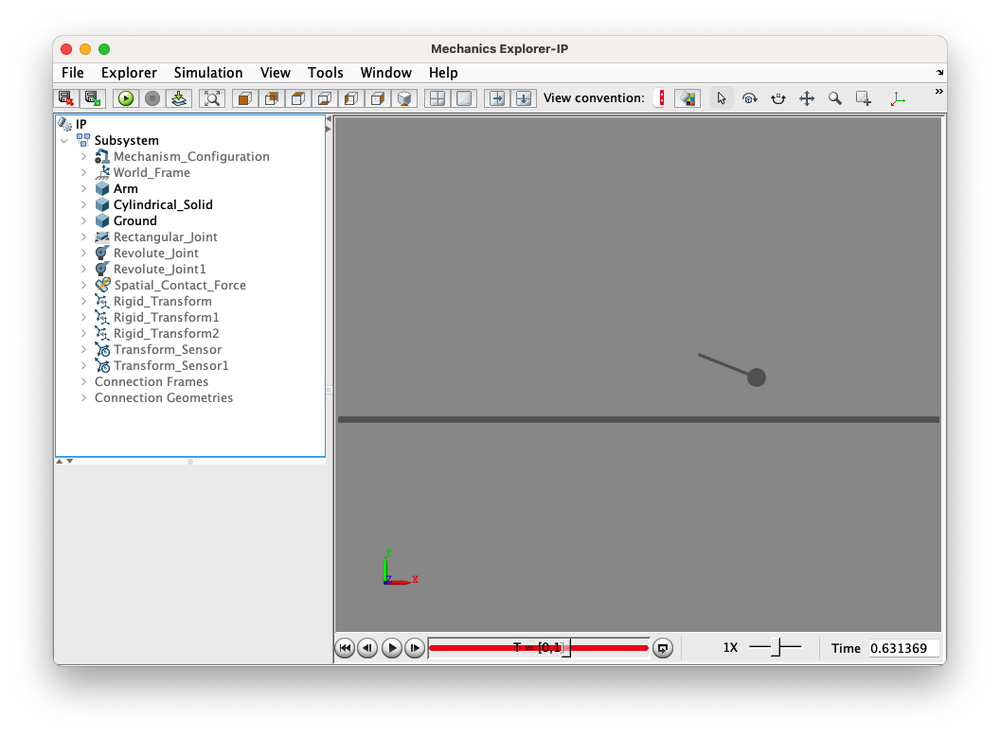

Dynamics Review and Simscape Multibody
Table of Contents
- Where it started
- Spatial Contact Force and Rectangular Joint
- Modelling Problems
- Lagrange Method
- Newton’s method
- Summary
Where it started
At the start I was assigned with an mission to, eventually, realise a inverted-pendulum-ish object (after many simplification with certain constraints). It was a good chance that to get more familiar with SIMSCAPE. At least, the idea sounds good.
In the past simscape simulations, robots were fixed onto a axis (prismatic joint), which prevent from dropping. As by default, if you directly put something in it, then run. Things just falls. For many ideal objects, this method suits fine. It is suitable for investigating 2D movement, and no need to care for the wheels, and easy to damping coefficients.
Spatial Contact Force and Rectangular Joint
However, in a more realistic sense, things could get off from the ground. Or, it could fall from certain height, and it could have friction force. I had a little research on this, and for the ground, it can be regular solid blocks, if surface with different height is required, then use Grid surface suits best. But how to make objects interactive with each other? Answer is on the title. Thanks to a project that I recently discovered, it is the very example I need. And rectangular joint also suits for bi-directional movement. If the torque suits, training for jump is also possible
Modelling Problems
Seeing two different object collide in simscape is satisfying, as it is what I wanted to do. The object after simplification looks just like a RoboMaster Robot, but obviously I didn’t take this article as an example. Just like Regular Lagrange method, I calculate Kinematics and Dynamics for the robot, get Lagrangian, and then solve the equation. Everything was good before that I saw my object took off in simscape simulation. That was hilarious, but also terrible.

An idea came to me that, did I just messed up in modelling process? Indeed, because I’m not quite good at theoretical mechanics. It always confuse me that how to calculate the rotational energy of a object with aggregate translational and rotational velocities, especially the moment of inertia, the axis for analysis etc. Or maybe it’s the introduction of friction force would change the model greatly, which differs from my intuitive sense.
Lagrange Method
Anyway, I have to find a way to find out the exact problems. So starting from the simplest model I cold think of, a two-wheel self-balance vehicle, which also could use the spatial contact block.
Analyse the systems by parts, but before that, list the positions for centers of mass, it helps to write derivatives.
Centers of Mass
Wheel:
Pendulum:
Translational Velocity and Energy
Wheel:
Pendulum:
Rotational Velocity, Moment of inertia and Energy
Wheel
Pendulum
Lagrangian
As for the potential energy, the zero-potential surface crosses the center of the wheel, so only counts pendulum’s potential energy.
Then list the generalized force to the corresponding generalized coordinate, list the equation.
The rest is to use matrix product to get a nonlinear equation, after simple linearization, the model is obtained.
Newton’s method
If getting used to it, the pre-calculation part is quite simple. The analysis is also conducted in parts.
For the actuation wheel:
For the pendulum, we have:
When I completely figured it out, its quite straightforward.
However, the following solve systems of equations is way more complicated than the prior method. It is recommended to use MATLAB solve the equation and obtain its Jacobian at the equilibrium position.
Summary
Two methods should give the identical numerical result, otherwise maybe check somewhere that could go wrong. However, I’m not sure if I could figure out the solutions when some constraint is applied. At least in the simplified model, it worked, which encouraged me.